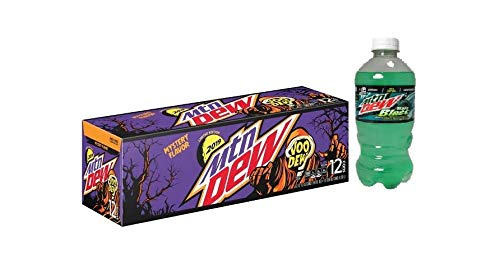

What are the best Mountain Dew flavors?

The best Mountain Dew flavors are Baja Blast and VooDew. Baja Blast is a tropical lime spin on the original flavor and packs a delicious punch.
The exclusivity of Baja Blast helps further the greatness because being only able to drink it at Taco Bell and summertime availability adds to the drinking experience.
Baja Blast is known by many as the best Mountain Dew flavor, maybe even the pinnacle of pops, but there is one more contender that puts up a serious fight.
That underdog and often overlooked contender is Mountain Dew VooDew! I love the name and aesthetic for this can, full of cool ghosts and wisping colors.
VooDew is also a limited time beverage, being only available during Halloween and being marked as a "mystery flavor" adds to the spooky experience that Mountain Dew was trying to go for.
VooDew is a great example of a holiday beverage because it encapsulates what the holiday is all about while offering a new experience to veteran Dew drinkers.
VooDew is the most recent flavor Mountain Dew has released, which means they are improving their flavor repertoire substantially!
This makes me excited for
future flavors and gives me hope for Mountain Dew's future.